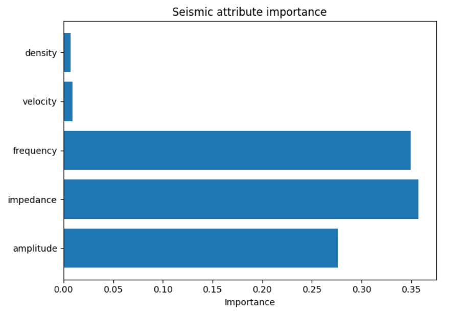
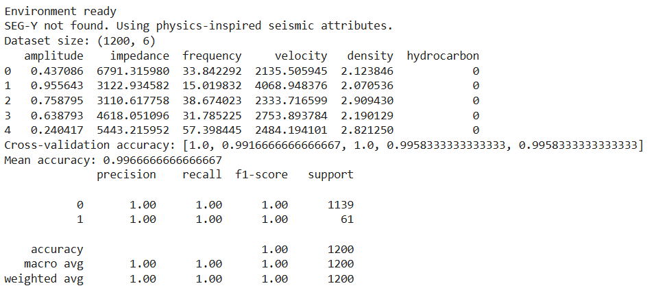
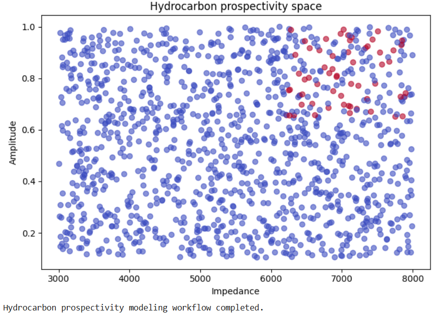

Machine Learning • Petroleum Geophysics • Seismic Interpretation
This project demonstrates how GeoAI techniques can support hydrocarbon exploration by combining seismic attributes with machine learning models. Instead of claiming direct hydrocarbon discovery, the model highlights areas that may show higher prospectivity based on seismic attribute patterns. The workflow integrates geological reasoning with data-driven analysis to simulate an early-stage petroleum exploration workflow.



The complete workflow, machine learning model, and seismic interpretation analysis are available in the GitHub repository.